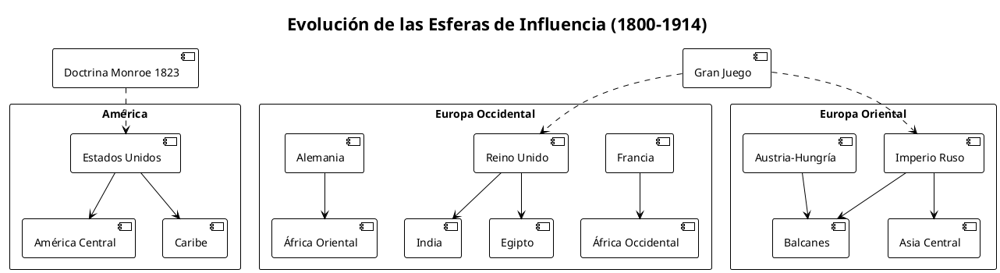
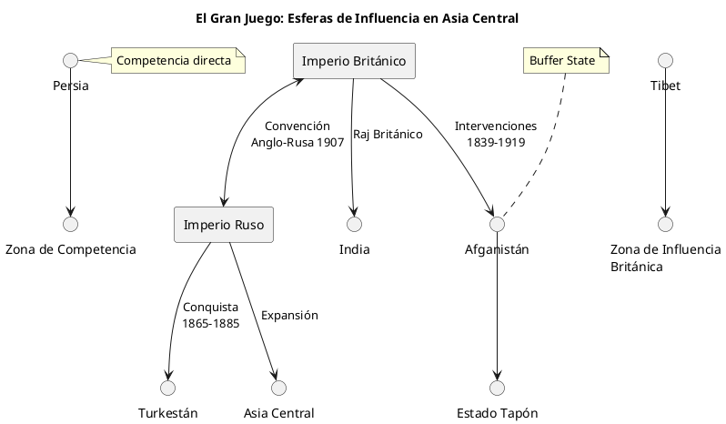
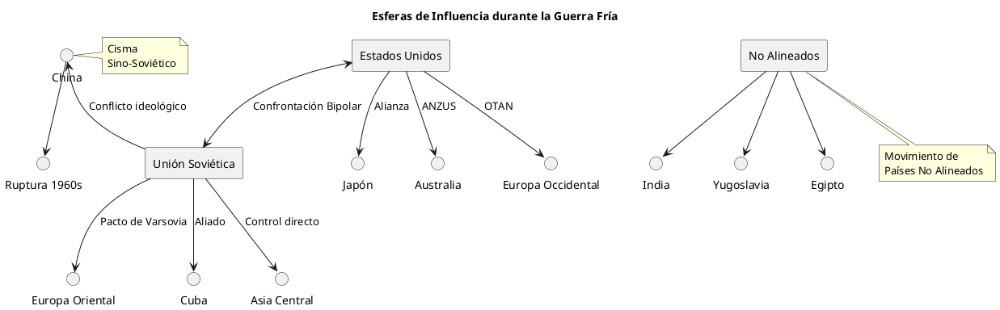
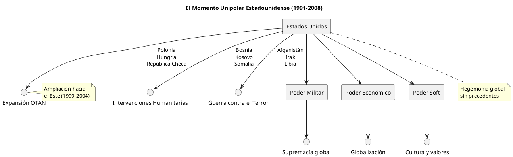
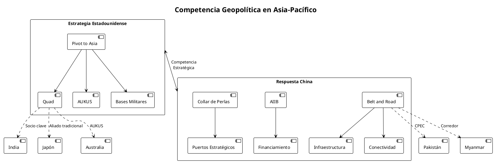
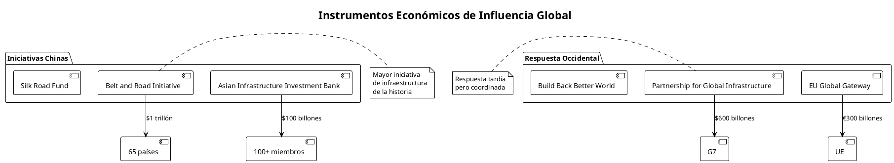
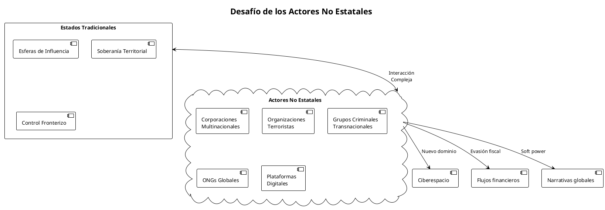
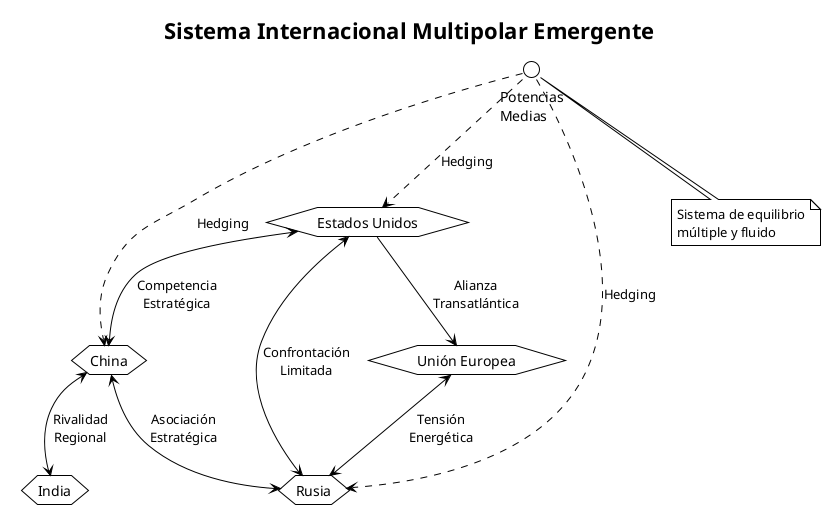

Esferas de Influencia: De la Doctrina Monroe al Multipolarismo Contemporáneo
Esferas de Influencia: De la Doctrina Monroe al Multipolarismo Contemporáneo
El concepto de esferas de influencia constituye uno de los pilares fundamentales para comprender la arquitectura del poder global. Desde sus orígenes decimonónicos hasta su manifestación en el sistema multipolar contemporáneo, estas zonas de predominio geopolítico han determinado el curso de la historia internacional y continúan siendo clave para analizar las dinámicas de poder actuales.
Génesis Histórica del Concepto
Los Antecedentes: Del Equilibrio Westfaliano a las Grandes Potencias
El sistema de Westfalia (1648) estableció los fundamentos de la soberanía estatal moderna, pero fue durante el siglo XIX cuando el concepto de esferas de influencia adquirió su forma definitiva. La expansión imperial europea y el declive del Imperio Otomano crearon vacíos de poder que las grandes potencias se apresuraron a llenar.

La Doctrina Monroe: Primer Paradigma Moderno
La Doctrina Monroe (1823) representa el primer enunciado explícito de una esfera de influencia en términos modernos. James Monroe declaró que América era para los americanos, estableciendo un precedente que perduraría dos siglos.
| Principio | Descripción | Implicaciones |
|---|---|---|
| No Colonización | Europa no debe establecer nuevas colonias en América | Hegemonía estadounidense en el hemisferio |
| No Intervención | EE.UU. no intervendrá en asuntos europeos | Aislamiento estratégico selectivo |
| Reciprocidad | Europa no debe intervenir en América | Legitimación de intervenciones futuras |
Consolidación en el Siglo XIX
El "Gran Juego" Anglo-Ruso
El enfrentamiento entre el Imperio Británico y el Imperio Ruso en Asia Central (1813-1907) cristalizó la noción moderna de competencia por esferas de influencia. Esta rivalidad geopolítica estableció patrones que se repetirían en conflictos posteriores.

La Conferencia de Berlín y el Reparto de África
La Conferencia de Berlín (1884-1885) formalizó el concepto de esferas de influencia a través del reparto sistemático de África entre las potencias europeas.
| Potencia | Territorios Principales | Estrategia |
|---|---|---|
| Reino Unido | Egipto, Sudáfrica, Nigeria | Control de rutas comerciales |
| Francia | África Occidental, Madagascar | Expansión continental |
| Alemania | África Oriental, Camerún | Llegada tardía, compensación |
| Bélgica | Congo | Explotación económica intensiva |
| Portugal | Angola, Mozambique | Mantenimiento histórico |
Las Esferas de Influencia en el Siglo XX
La Era de los Bloques: 1945-1991
La Guerra Fría representó la cristalización más perfecta del concepto de esferas de influencia, dividiendo el mundo en dos bloques antagónicos.

Acuerdos de Yalta y la División del Mundo
Los Acuerdos de Yalta (1945) formalizaron la división de Europa en esferas de influencia, estableciendo un precedente para la bipolaridad de posguerra.
| Región | Esfera de Influencia | Mecanismo de Control |
|---|---|---|
| Europa Occidental | Estados Unidos | Plan Marshall, OTAN |
| Europa Oriental | Unión Soviética | COMECON, Pacto de Varsovia |
| Alemania | División | Ocupación cuatripartita |
| Corea | División | Zonas de ocupación |
Transformaciones Post-Guerra Fría
El Momento Unipolar (1991-2008)
La disolución de la Unión Soviética creó un vacío geopolítico que Estados Unidos llenó temporalmente, estableciendo una hegemonía global sin precedentes.

El Resurgimiento de las Potencias Regionales
A partir de 2008, el sistema internacional experimentó una transición hacia el multipolarismo, con el resurgimiento de potencias regionales que desafiaron la hegemonía estadounidense.
| Potencia | Región de Influencia | Instrumentos | Desafíos a EE.UU. |
|---|---|---|---|
| China | Asia-Pacífico | BRI, AIIB | Disputa comercial, Taiwan |
| Rusia | Europa Oriental, Asia Central | Energía, militar | Ucrania, Siria |
| India | Océano Índico, Asia del Sur | Quad, Act East | Limitados |
| Irán | Oriente Medio | Proxies, chiitas | Programa nuclear |
| Turquía | Mediterráneo Oriental | Neo-otomanismo | Siria, Libia |
Esferas de Influencia Contemporáneas
El Pivote Asiático y la Respuesta China
La estrategia estadounidense del "Pivot to Asia" (2011) y la respuesta china a través de la Iniciativa de la Franja y la Ruta han redefinido las dinámicas geopolíticas en Asia-Pacífico.

La Doctrina Putin y la Esfera Post-Soviética
Rusia ha desarrollado una doctrina explícita de esferas de influencia en el espacio post-soviético, utilizando instrumentos económicos, energéticos y militares.
| País | Status | Instrumentos Rusos | Nivel de Influencia |
|---|---|---|---|
| Bielorrusia | Satélite | Energía, militar | Muy Alto |
| Kazajstán | Aliado estratégico | OTSC, energía | Alto |
| Armenia | Dependiente | Base militar, energía | Alto |
| Kirguistán | Influencia rusa | Base militar, remesas | Medio-Alto |
| Uzbekistán | Equilibrio | Cooperación limitada | Medio |
| Georgia | Hostil | Territorio ocupado | Negativo |
| Ucrania | En disputa | Guerra, proxies | Conflictivo |
Instrumentos Contemporáneos de las Esferas de Influencia
Poder Económico: BRI vs. Iniciativas Occidentales

Poder Militar: Bases y Alianzas
| Potencia | Bases Extranjeras | Alianzas Militares | Gasto Militar (2024) |
|---|---|---|---|
| Estados Unidos | 750+ bases | OTAN, Quad, AUKUS | $877 billones |
| China | 5 bases confirmadas | SCO, limitadas | $292 billones |
| Rusia | 20+ bases | OTSC, limitadas | $109 billones |
| Francia | 15+ bases | Sahel, Índico | $61 billones |
| Reino Unido | 10+ bases | AUKUS, Commonwealth | $74 billones |
Desafíos y Limitaciones del Concepto
La Erosión Westfaliana: Actores No Estatales
El sistema internacional contemporáneo enfrenta el desafío de actores no estatales que trascienden las esferas de influencia tradicionales.

La Paradoja de la Interdependencia
La globalización económica ha creado una paradoja: mientras las potencias compiten por esferas de influencia, permanecen económicamente interdependientes.
| Relación | Comercio Bilateral (2023) | Dependencia Mutua | Tensión Geopolítica |
|---|---|---|---|
| EE.UU.-China | $690 billones | Alta | Muy Alta |
| UE-Rusia | $158 billones (pre-2022) | Energética | Muy Alta |
| China-UE | $847 billones | Comercial | Media |
| EE.UU.-India | $191 billones | Tecnológica | Baja |
Implicaciones para el Orden Internacional
Hacia un Mundo Multipolar: El Fin de la Hegemonía
El sistema internacional evoluciona hacia un multipolarismo complejo donde múltiples potencias mantienen esferas de influencia superpuestas y a menudo conflictivas.

El Dilema de las Potencias Medias
Las potencias medias enfrentan el desafío de navegar entre múltiples esferas de influencia, adoptando estrategias de hedging para maximizar su autonomía.
| Potencia Media | Estrategia Principal | Balancing Acts | Resultado |
|---|---|---|---|
| Turquía | Multi-alineamiento | OTAN vs. Rusia | Autonomía aumentada |
| Brasil | Autonomía regional | EE.UU. vs. China | Liderazgo sudamericano |
| Indonesia | No alineamiento | Quad vs. China | Neutralidad activa |
| Arabia Saudí | Diversificación | EE.UU. vs. China | Maximización opciones |
Prospectiva: El Futuro de las Esferas de Influencia
Escenarios Emergentes

Factores Determinantes
| Factor | Impacto | Dirección Probable | Consecuencias |
|---|---|---|---|
| Crecimiento económico relativo | Alto | Convergencia China-EE.UU. | Bipolaridad económica |
| Innovación tecnológica | Muy Alto | Competencia EE.UU.-China | Desacoplamiento selectivo |
| Cambio climático | Medio | Cooperación necesaria | Nuevas alianzas verdes |
| Demografía | Medio | Envejecimiento occidental | Ventaja países jóvenes |
| Recursos naturales | Alto | Escasez creciente | Competencia intensificada |
Conclusiones
Las esferas de influencia han evolucionado desde conceptos decimonónicos relativamente simples hasta complejas redes de poder superpuestas en el siglo XXI. El multipolarismo emergente presenta tanto oportunidades como desafíos para la estabilidad internacional.
La clave para entender el futuro radica en reconocer que las esferas de influencia contemporáneas son más fluidas, superpuestas y contestadas que sus predecesoras históricas. En este contexto, la habilidad de las potencias para adaptarse a la realidad multipolar determinará su éxito geopolítico.
El concepto de esferas de influencia permanece relevante, pero su manifestación en el siglo XXI requiere marcos conceptuales más sofisticados que reconozcan la complejidad del poder en la era global.
Referencias
- Kissinger, Henry A. World Order. New York: Penguin Books, 2014.
- Mearsheimer, John J. The Tragedy of Great Power Politics. New York: W.W. Norton, 2001.
- Kagan, Robert. The Return of History and the End of Dreams. New York: Knopf, 2008.
- Allison, Graham. Destined for War: Can America and China Escape Thucydides's Trap? Boston: Houghton Mifflin Harcourt, 2017.
- Zakaria, Fareed. The Post-American World: Release 2.0. New York: W.W. Norton, 2011.
- Walt, Stephen M. The Origins of Alliances. Ithaca: Cornell University Press, 1987.
- Gilpin, Robert. War and Change in World Politics. Cambridge: Cambridge University Press, 1981.
- Kennedy, Paul. The Rise and Fall of the Great Powers. New York: Random House, 1987.
- Brzezinski, Zbigniew. The Grand Chessboard: American Primacy and Its Geostrategic Imperatives. New York: Basic Books, 1997.
- Layne, Christopher. "The Unipolar Illusion Revisited: The Coming End of the United States' Unipolar Moment." International Security 31, no. 2 (2006): 7-41.